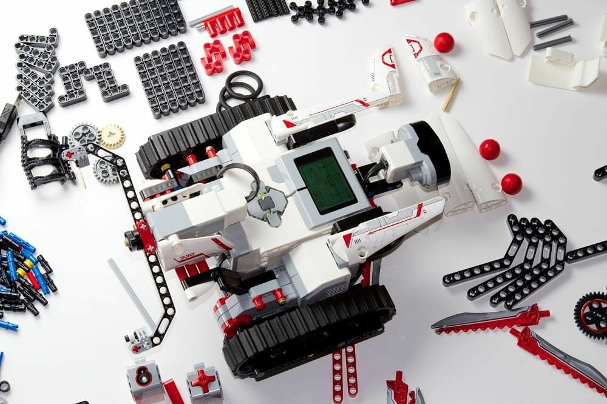
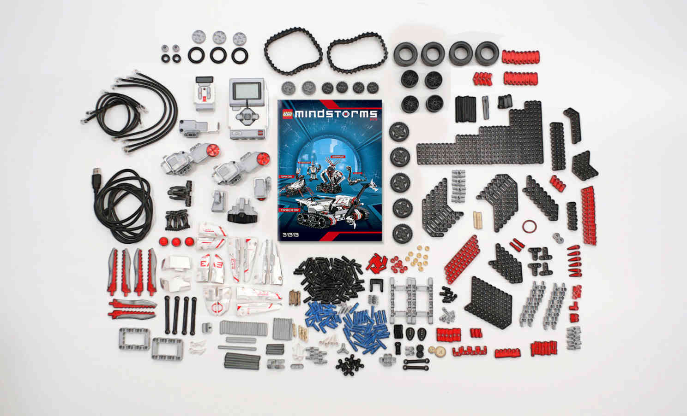
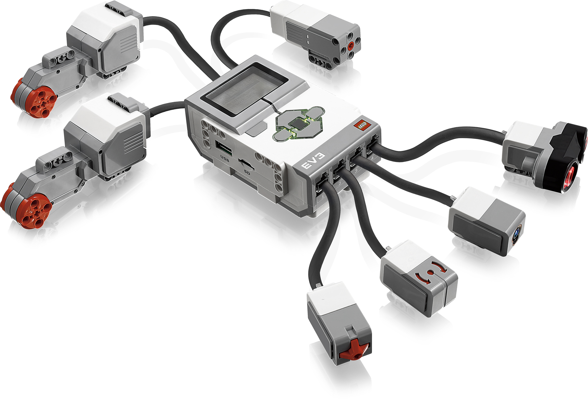
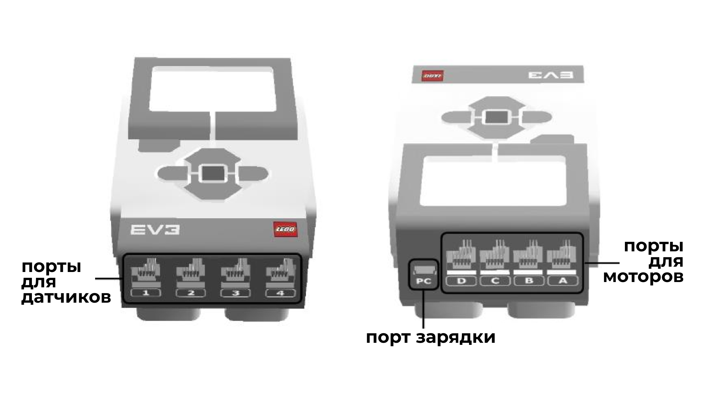
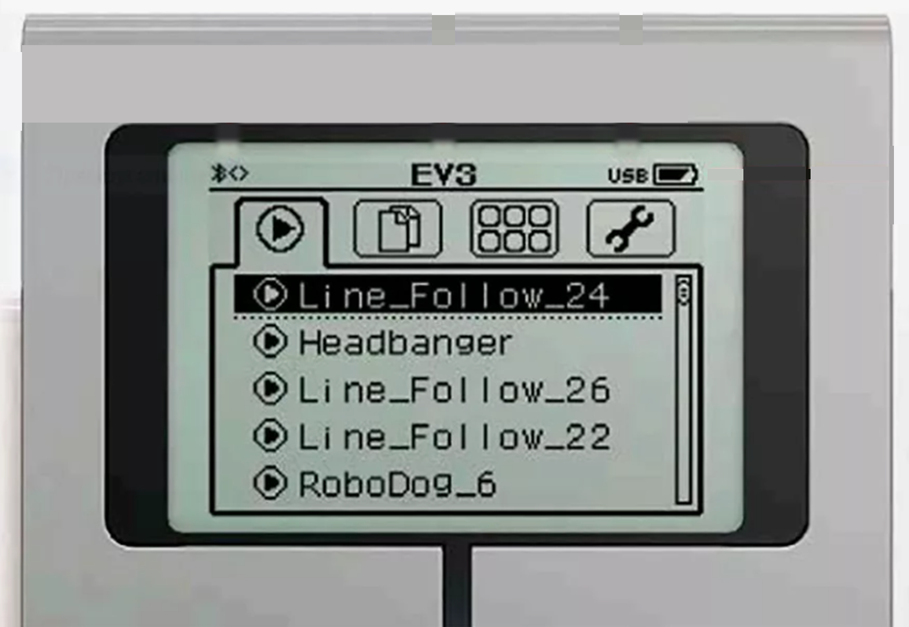
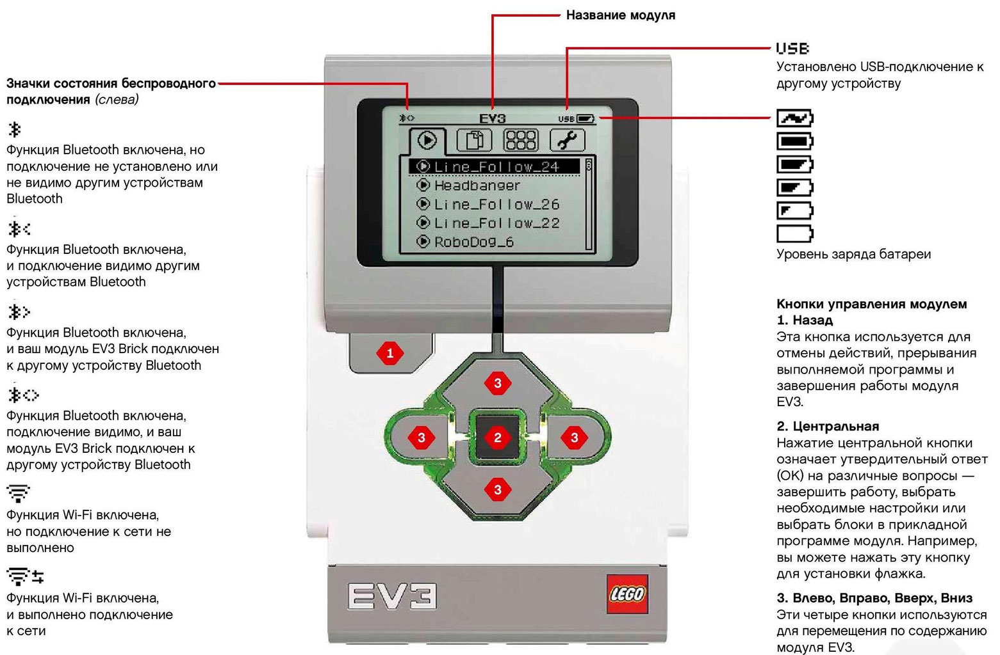

Общий обзор технологии EV3
Теоретический блок
Что такое LEGO MINDSTORMS EV3
LEGO MINDSTORMS EV3 — это робототехнический конструктор, с помощью которого можно создавать, программировать и тестировать роботов. Он объединяет детали LEGO Technic, программируемый блок, моторы, датчики и среду программирования.
Технология EV3 позволяет обучающимся не только собирать модели по инструкции, но и понимать, как работает робот: из каких частей он состоит, как выполняет программу, как получает данные от датчиков и как управляет моторами.
Главная особенность EV3 заключается в том, что робот может выполнять действия по заранее созданной программе. Программа загружается в управляющий блок EV3, после чего робот выполняет команды: движется, поворачивает, реагирует на датчики, выводит сообщения на экран или подаёт звуковые сигналы.

Технология EV3
EV3 используется для изучения основ робототехники, конструирования, программирования и алгоритмического мышления.

Комплект конструктора
В комплект входят детали для сборки роботов, моторы, датчики, кабели и программируемый блок EV3.

Блок EV3
Программируемый блок является главным устройством робота: он выполняет программу и управляет подключёнными устройствами.
Из чего состоит робот EV3
Робот EV3 представляет собой систему, в которой все элементы выполняют определённую роль. Детали LEGO образуют конструкцию, моторы приводят модель в движение, датчики получают информацию из окружающей среды, а блок EV3 управляет всей работой робота.
Главный контроллер
Выполняет программу, обрабатывает данные от датчиков и отправляет команды моторам.
Движение робота
Моторы заставляют робота ехать, поворачивать, поднимать детали или выполнять механические действия.
Получение информации
Датчики помогают роботу определять цвет, расстояние, касание, угол поворота и другие параметры.
Подключение устройств
Кабели соединяют моторы и датчики с программируемым блоком EV3.
Конструкция модели
Балки, оси, штифты, колёса и соединители используются для сборки корпуса и механизмов робота.
Поведение робота
Программа задаёт порядок действий робота: движение, остановку, реакцию на датчики и выполнение команд.
Программируемый блок EV3

Программируемый блок EV3
Блок EV3 можно назвать «мозгом» робота. Именно в него загружается программа. Он получает данные от датчиков, обрабатывает их и управляет моторами.
На корпусе блока расположены экран, кнопки управления и порты подключения. Через них можно подключать моторы, датчики и соединять EV3 с компьютером.
Порты подключения EV3
Для подключения устройств на блоке EV3 используются входные и выходные порты. Входные порты нужны для датчиков, а выходные — для моторов.
Порты блока EV3
| Тип порта | Обозначение | Что подключается |
|---|---|---|
| Входные порты | 1, 2, 3, 4 | Датчик касания, датчик цвета, ультразвуковой датчик, гироскопический датчик |
| Выходные порты | A, B, C, D | Большие и средние моторы |
| USB-порт | USB | Подключение блока EV3 к компьютеру |
Важно
Если мотор или датчик подключён к одному порту, а в программе выбран другой, робот может работать неправильно. Поэтому перед запуском программы всегда нужно проверять подключение.
Комплект «Быстрый старт»
Комплект «Быстрый старт» предназначен для первого знакомства с EV3. Он помогает обучающимся понять, какие детали входят в набор, как подключаются основные устройства и с чего начинается работа с роботом.
На первых занятиях важно не пытаться сразу собрать сложную модель. Лучше начать с простого робота, проверить подключение моторов, познакомиться с блоком EV3 и выполнить первые действия через меню.
Подготовка комплекта
Перед работой нужно открыть набор, проверить наличие основных деталей, моторов, датчиков и кабелей.

Подключение устройств
Моторы подключаются к портам A–D, а датчики — к портам 1–4. Кабели должны быть закреплены аккуратно.

Первый запуск
После включения блока EV3 можно открыть главное меню, выбрать программу или проверить работу подключённых устройств.
Главное меню EV3

Главное меню EV3
Главное меню EV3 отображается на экране программируемого блока после включения. С его помощью можно запускать программы, просматривать файлы, проверять порты, изменять настройки и управлять устройством.
Основные разделы меню EV3
Запуск программ
В этом разделе можно найти загруженные программы и запустить их на выполнение.
Встроенные возможности
Здесь доступны встроенные функции блока EV3, например просмотр портов и работа с датчиками.
Параметры блока
В настройках можно изменить параметры устройства, подключение, звук, экран и другие функции.
Кнопки управления EV3
На лицевой стороне блока EV3 расположены кнопки управления. Они позволяют перемещаться по меню, выбирать пункты, возвращаться назад и запускать действия.
Назначение кнопок EV3
| Кнопка | Назначение | Пример использования |
|---|---|---|
| Центральная кнопка | Выбор пункта меню или подтверждение действия | Запустить выбранную программу |
| Кнопки вверх, вниз, влево, вправо | Перемещение по пунктам меню | Выбрать нужный раздел или файл |
| Кнопка назад | Возврат к предыдущему экрану | Выйти из раздела меню |
Проверь себя: что выбрать в меню?
Нажмите на ситуацию, чтобы увидеть подсказку.
Практический блок
Практическая часть занятия направлена на первое знакомство с комплектом EV3, программируемым блоком, портами подключения и главным меню устройства.
Задание 1. Рассмотрите комплект EV3
Цель: познакомиться с основными элементами конструктора EV3.
- Откройте комплект LEGO MINDSTORMS EV3.
- Найдите программируемый блок EV3.
- Найдите большие моторы.
- Найдите датчики, входящие в комплект.
- Найдите соединительные кабели.
- Рассмотрите детали LEGO Technic: балки, оси, штифты и колёса.
Подсказка: разложите детали по группам: блок EV3, моторы, датчики, кабели и строительные элементы.
Задание 2. Изучите порты блока EV3
Цель: научиться различать входные и выходные порты.
- Найдите на блоке EV3 порты 1, 2, 3 и 4.
- Определите, какие устройства подключаются к этим портам.
- Найдите порты A, B, C и D.
- Определите, какие устройства подключаются к этим портам.
- Подключите один мотор к порту B.
- Подключите второй мотор к порту C.
Подсказка: датчики подключаются к портам 1–4, а моторы — к портам A–D.
Задание 3. Включите блок EV3 и откройте главное меню
Цель: познакомиться с экраном и кнопками управления EV3.
- Включите блок EV3.
- Дождитесь загрузки главного меню.
- Найдите кнопки навигации.
- Переместитесь между пунктами меню.
- Откройте один из разделов меню.
- Вернитесь назад к главному экрану.
Подсказка: центральная кнопка используется для выбора, боковые кнопки — для перемещения, а кнопка назад — для возврата.
Задание 4. Проверьте подключённые устройства
Цель: определить, отображаются ли подключённые моторы и датчики в меню EV3.
- Подключите мотор или датчик к блоку EV3.
- Откройте раздел просмотра подключённых устройств.
- Посмотрите, отображается ли устройство на нужном порту.
- Отключите устройство и подключите его к другому порту.
- Проверьте, изменилось ли отображение порта.
- Сделайте вывод, почему важно правильно указывать порты в программе.
Подсказка: если устройство не отображается, проверьте кабель и правильность подключения.
Задание 5. Выполните первый запуск
Цель: закрепить работу с меню EV3 и запуском программы.
- Выберите готовую программу или демонстрационный файл на блоке EV3.
- Откройте программу через меню.
- Запустите выполнение.
- Наблюдайте за действиями робота или подключённых устройств.
- Остановите программу.
- Обсудите, какие команды мог выполнять робот.
Подсказка: если программа не запускается, проверьте заряд блока EV3 и подключение устройств.
Вопросы для самопроверки
1. Что такое LEGO MINDSTORMS EV3?
LEGO MINDSTORMS EV3 — это робототехнический конструктор, с помощью которого можно собирать и программировать роботов.
2. Для чего нужен программируемый блок EV3?
Блок EV3 выполняет программу, получает данные от датчиков и управляет моторами робота.
3. К каким портам подключаются датчики?
Датчики подключаются к входным портам 1, 2, 3 и 4.
4. К каким портам подключаются моторы?
Моторы подключаются к выходным портам A, B, C и D.
5. Для чего нужно главное меню EV3?
Главное меню EV3 нужно для запуска программ, просмотра файлов, проверки подключённых устройств и настройки блока.
6. Почему важно проверять порты подключения?
Если устройство подключено к одному порту, а в программе выбран другой, робот может работать неправильно.
7. Что входит в комплект «Быстрый старт»?
В него входят основные элементы для первого знакомства с EV3: программируемый блок, детали конструктора, моторы, датчики и кабели.
8. Какую роль выполняют моторы?
Моторы приводят робота в движение и позволяют выполнять механические действия.
9. Какую роль выполняют датчики?
Датчики получают информацию из окружающей среды и передают её программируемому блоку.
10. Что нужно сделать перед первым запуском программы?
Нужно проверить заряд блока EV3, подключение моторов и датчиков, правильность портов и выбрать нужную программу в меню.